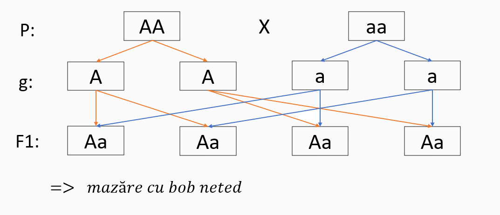
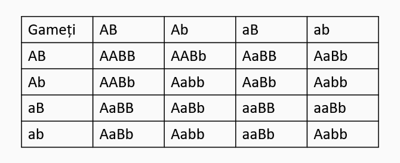

Legile ereditații:
1. MONOHIBRIDISMUL
AA = mazăre cu bob neted (caracter DOMINANT)
aa = mazăre cu bob zbârcit (caracter RECESIV)
P = părinți/genitori
g = gameți
Fn = generația n
Obs. Caracterul dominant se notează cu literă mare, iar caracterul recesiv cu literă mică.
=> Raport fenotipic în F2 este de 3:1.
Fenotipul reprezintă totalitatea însușirilor unui individ ca rezultat al interacțiunii dintre genotip și mediu.
Genotiopul reprezintă totalitatea genelor unui individ responsabile de apariția unui anumit caracter.
Clasificarea organismelor din F2 din punct de vedere genotipic:
=> Raportul genotipic în F2 este 1:2:1.
Enunțul legii: Gameții sunt puri genetic, având doar unul din factorii ereditari pereche (factor ereditari = genă).
2. DIHIBRIDISMUL
AABB = mazăre cu bob neted și galben (caracter dominant)
aabb = mazăre cu bob zbârcit și verde (caracter recesiv)
AABB X aabb => AaBb, F1: 100% hibride
Organismele hibride (heterozigote) din F1 produc patru categorii de gameți: AB, Ab, aB, ab, feminini și masculini, prin a căror combinare rezultă 16 categorii de indivizii.
Segregare în F2 după fenotip = 9:3:3:1
Enunțul legii: Fiecare pereche de factori ereditari segregă independent de altă pereche de factori ereditari, astfel încât în F2 raportul de segregare după fenotip este de 9:3:3:1.
Grupele de sânge
Rh
Determinismul cromozomial al sexelor
1. Tipul Drosophila: întâlnit la: insecte, toate mamiferele, plante (bumbac, hamei).
Cromozomi ai sexului = HETEROZOMI - X și Y.
La Drosophila melanogaster: femela are 6 autozomi și XX, iar masculul are 6 autozomi și XY.
Femelele sunt homogamatice (XX), iar masculii sunt heterogamatici (XY).
1. Tipul Abraxas (pasăre): întâlnit la: fluturele de mătase, toate păsările , reptile și unii amfibieni.
Femelele sunt heterogamatice (XY), iar masculii sunt heomogomatici (XX).
Influența mediului asupra eredității
MUTAGENEZA = procesul de apariție a mutațiilor
MUTANT = individul purtător de mutații
MUTAȘIE GENETICĂorice modalitate neprogramată în structura și funcția materialului genetic
Clasificarea mutațiilor:
După celulele afectate: somatice și gametice.
După cromozomii afectați: autozomale și heterozomale.
După cantitatea de material genetic afectat:
d. După efectul asupra organismului:
e. După modul de apariție:
Factori mutageni:
1. MALADII METABOLICE
A. AUTOZOMALE -apar prin mutația unor gene localizate în autozomi:
A. HETEROZOMALE sau sex-linkate -determinate de mutații ale genelor plasate în cromozomi:
Hemofilia:
Daltonismul:
1. MALADII CROMOZOMALE - pot afecta:
A. STRUCTURALE- sindromul cri du chat:
B. NUMERICE - pot afecta:
a. MALADII AUTOZOMALE - afectează cromozomii din celulele somatice în urma non-disjucției perechilor de cromozomi în meioză.
TRISOMIA 21 = SINDROMUL DOWN
a. MALADII HETEROZOMALE - afectează cromozomii celulelor sexuale în urma non-disjunției cromozomilor sexuali în meioză.
TRISOMIE HETEROZOMALĂ (XXX, 2n=47)
SINDROMUL KLINEFELTER (XXY, 2n=47)
SINDROMUL TURNER (XO, 2n=45)